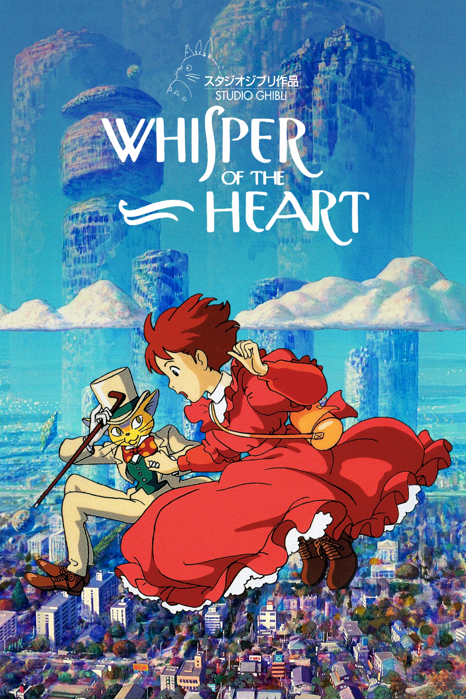
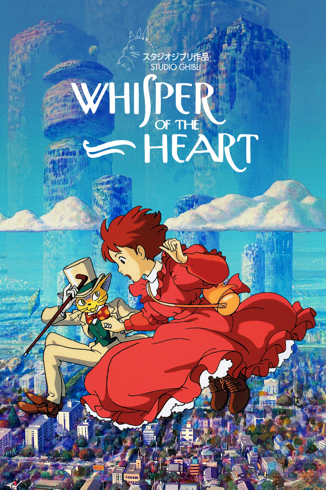

Watch the best
__ of Studio Ghibli
_______ now
Remember or find out about all fantastic
stories in this universe!

The story is set in 1963 in Yokohama. Kokuriko Manor sits on a hill overlooking the harbour. A 16 year-old girl, Umi, lives in that house. Every morning she...


 
